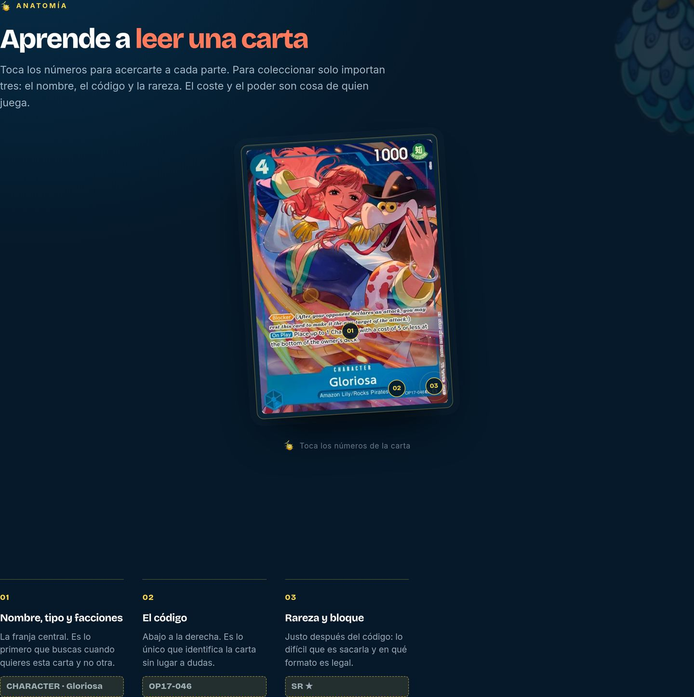
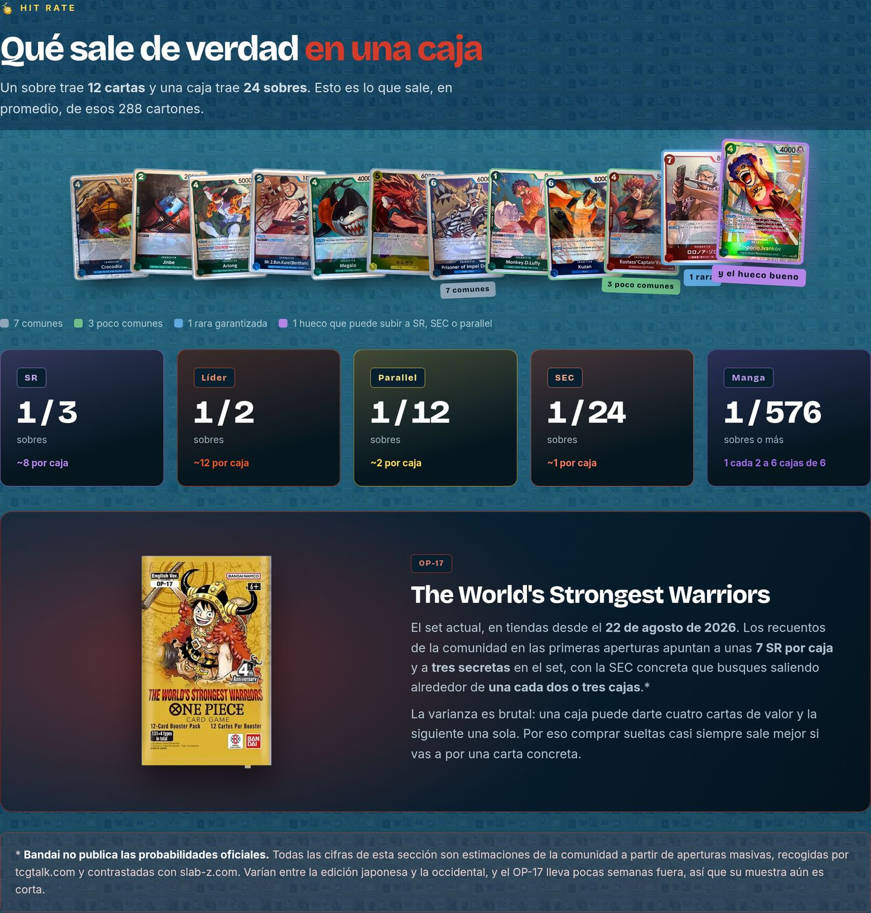
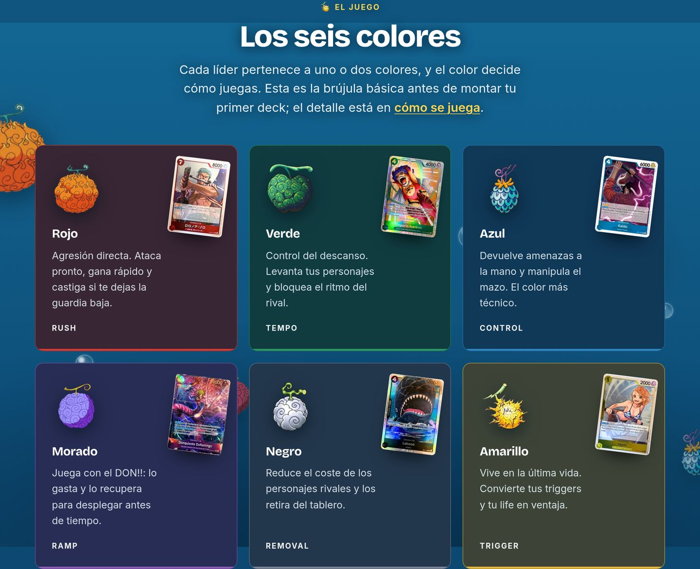
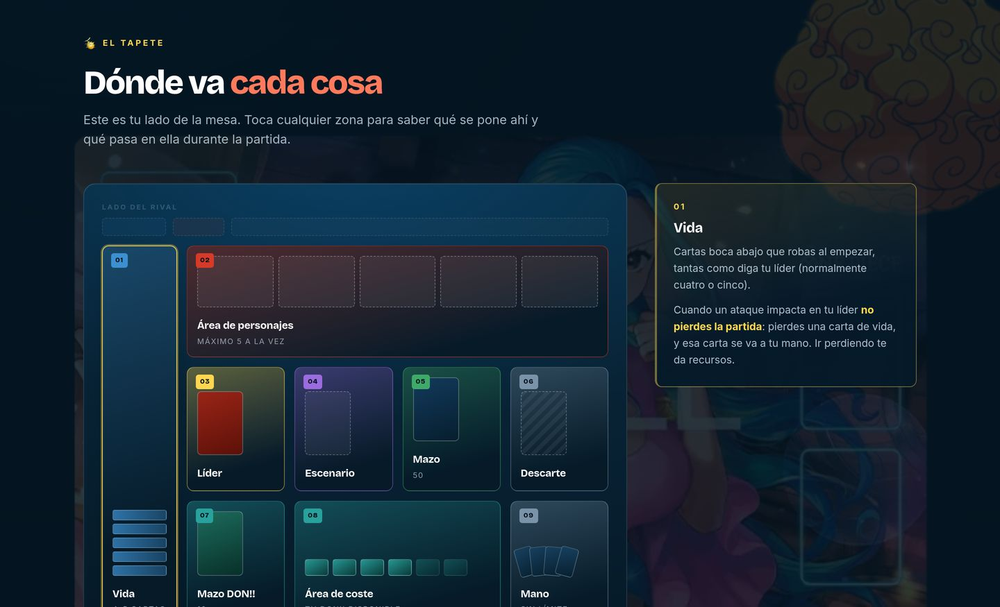
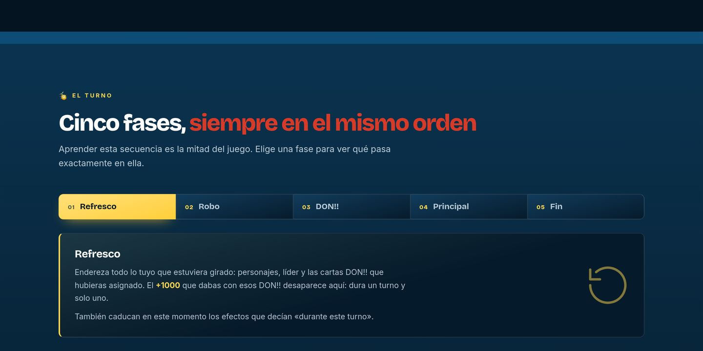
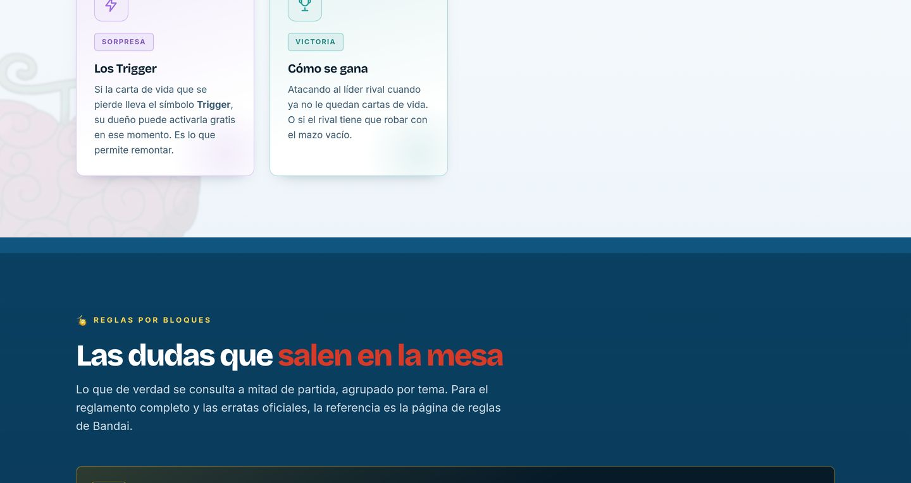
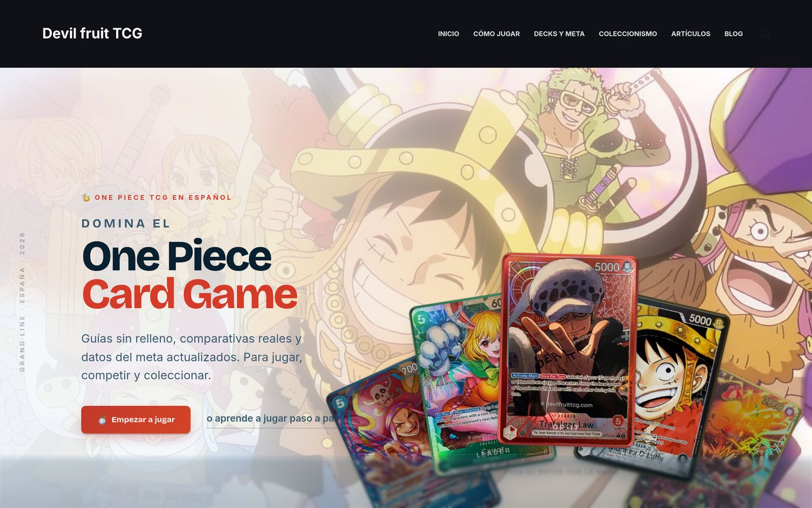
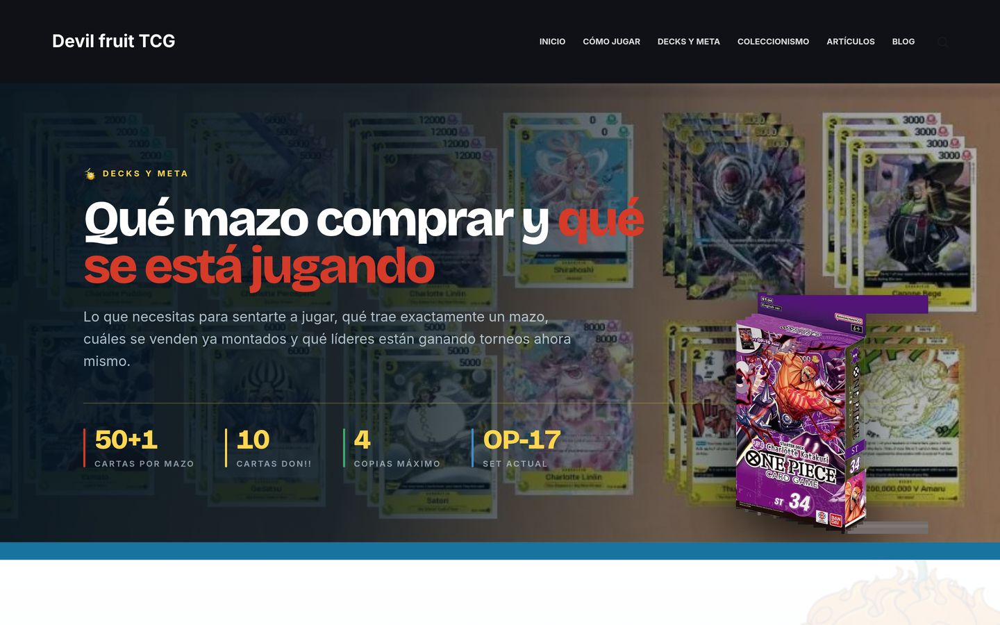
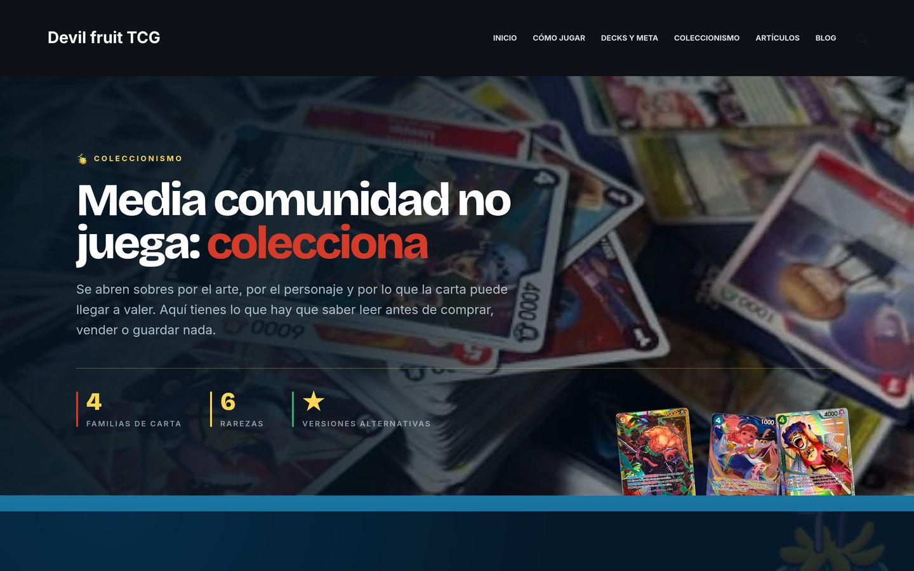

Tres capas, un solo artículo
SEO, AEO y GEO trabajados a la vez sobre el mismo contenido, sin escribir dos veces y sin ninguna «versión para IA» aparte.
/ Caso de estudio · SEO, GEO y AEO
Web de nicho en español sobre One Piece Card Game, construida de principio a fin como campo de pruebas real de una estrategia integral de visibilidad orgánica: SEO clásico, AEO y optimización para motores generativos. Infraestructura self-hosted, metodología documentada desde antes del primer artículo y monetización por afiliación integrada desde el diseño.
Punto en el que está: la construcción está terminada y la web se lanza
el 15 de septiembre de 2026. La indexación está frenada a propósito
(noindex) hasta ese día, así que todo lo que hay debajo describe el sistema y
su línea base de día cero. Aquí no hay promesas de tráfico ni de posiciones: medirlas con
honestidad desde el primer día es justo el sentido del proyecto.
/ En corto
SEO, AEO y GEO trabajados a la vez sobre el mismo contenido, sin escribir dos veces y sin ninguna «versión para IA» aparte.
Cuatro hubs, cada uno para una fase distinta del recorrido, desde aprender las reglas hasta decidir qué comprar. Lógica de producto, no de blog.
El marcado FAQPage se construye parseando los bloques <details>
visibles, así lo que ve el lector y lo que lee el bot nunca se desincronizan. Sin
cloaking.
La medición de «cero menciones» de antes de publicar nada existe como dato. La mayoría de proyectos no tiene esa línea base porque empieza a medir tarde.
ChatGPT, Perplexity Pro, Google AI y Claude, ejecutados el día 1 de cada mes y registrados contra la línea base. La visibilidad en IA tratada como métrica, no como intuición.
Docker, Nginx Proxy Manager y un túnel de Cloudflare en mi propio servidor. El rank tracker y el tracker de GEO también corren ahí. El único coste recurrente es el dominio.
Carta anotada, tapete, simulador de sobre y sistema de colores. Todos construidos y en marcha, enseñando el mecanismo en vez de describirlo.
Blocksy como base, pisada con mi propio tema hijo. Bloques nativos de Gutenberg en vez de page builder, WebP y compresión automatizada. Rápida en el móvil, no solo en mi escritorio.
Una norma que me puse: cero suscripciones SaaS. Todos los trackers corren en hardware propio. Más lento que alquilar la respuesta, y eso es justo lo que buscaba.
Auditoría de competidores con Screaming Frog, filtrado de keywords con los motivos documentados y la línea base GEO de día cero capturada.
Arquitectura por intención de búsqueda, tema hijo propio, componentes interactivos y
el schema automático. Con noindex puesto todo el tiempo.
Lanzamiento. Se abre la indexación y sale la primera oleada de contenido, con el tracking ya en marcha en vez de montado después.
La batería de 20 prompts en cuatro motores cada mes, más el rank tracking, medido contra una línea base que ya existe.
/ 01 · El proyecto
devilfruittcg.com no es un blog sin estructura ni un ejercicio de prácticas. Está diseñada como producto editorial: arquitectura de contenido intencionada, tema hijo propio con componentes interactivos y una estrategia de posicionamiento pensada para funcionar tanto en Google como en los motores de respuesta generativa que están cambiando la forma de buscar información.
Funciona a la vez como proyecto real de afiliación y como caso de estudio vivo, que es exactamente el tipo de trabajo que ofrezco como servicio.
Me puse una norma antes de empezar: sin herramientas de pago. El rank tracking, el tracking de GEO, las auditorías y la automatización corren en hardware propio. Pagar una suscripción habría sido más rápido, y justo por eso no lo hice. El objetivo era aprender la parte técnica desde la raíz, entendiendo qué hace cada pieza en vez de alquilar la respuesta.
Caso de arquitectura SEO, GEO y AEO para un nicho de coleccionismo: contenido citable por LLMs (respuestas directas, schema generado desde el DOM), componentes interactivos como activos de enlace y un sistema de diseño propio para diferenciarse en un mercado saturado de plantillas genéricas. Todo verificable en producción, sin ningún dato inventado sin marcar.
/ 02 · Arquitectura de contenido
Cada sección ataca un tipo de búsqueda distinto y responde a una fase diferente del customer journey. No es un blog, es un sitio montado con lógica de producto.
Interlinking editorial, no forzado: cada artículo enlaza a la siguiente pieza lógica del
recorrido (reglas básicas, cómo jugar, identificar cartas, coleccionismo, decks) citada
en texto corrido y no en cajas genéricas de «artículos relacionados». Permalinks limpios
(/%postname%/, sin fecha) para que el contenido no caduque visualmente en la
SERP.
/ 03 · Estrategia
La mayoría de webs de nicho optimizan solo para Google. Esta está construida para posicionar en tres frentes con el mismo artículo, sin trabajo duplicado.
Un artículo
noindex durante la construcción, para que la web no se indexe hasta que el contenido esté completo. Decisión deliberada, no un descuido.<details><summary> en functions.php. Sin cloaking y con una sola fuente de verdad entre lo que ve el usuario y lo que lee el bot.ImageObject, para que el dominio viaje con la imagen cuando se comparte./ 04 · Componentes editoriales
Todos estos están construidos y funcionando en la web. Para diferenciarse de las webs de afiliados genéricas del nicho, enseñan el mecanismo en vez de listar datos, que es lo que genera enlaces naturales y lo que un LLM puede citar como fuente autorizada de cómo funciona algo, no solo del número.

Toca cualquier número para acercarte a esa parte de una carta real: coste, poder, nombre, código y rareza. Enseña a leer el objeto físico en vez de describirlo en un párrafo.

Lo que trae de verdad un sobre, con los pull rates citados con fuente y fecha y una nota explícita de que Bandai no publica probabilidades oficiales. Verificable y enlazable, que es lo que premian los motores de respuesta.

Los seis colores con su arquetipo en una línea cada uno, etiquetados como rush, tempo, control, ramp, removal y trigger. Formato de respuesta directa, la forma que Google convierte en fragmento destacado.

Nueve zonas del tablero clicables, cada una con su explicación. Contenido que un jugador nuevo no encuentra en ningún otro sitio en español, montado como componente y no como párrafo.

Las cinco fases del turno como secuencia seleccionable. Cada estado es una respuesta corta y directa, que es justo la forma que Google puede convertir en fragmento destacado.

Preguntas agrupadas construidas con elementos <details> nativos.
El mismo marcado que abre el lector es el que genera el schema FAQPage, así que los
dos nunca se pueden desincronizar.
/ 05 · Stack técnico
Todo el stack es self-hosted o gratuito. El único coste recurrente es el dominio, unos 10€ al año. Sin Ahrefs, sin Semrush, sin rank tracker de pago.
/ 06 · Rigor editorial
Google valora Experience, Expertise, Authoritativeness y Trustworthiness. Cada uno de los cuatro tiene una respuesta concreta en este proyecto.
| Señal E-E-A-T | Cómo se implementa |
|---|---|
| Experience | Colección propia, trackeada en app. Fotos de cartas reales que tengo, sin stock y sin arte oficial de Bandai. Datos de primera mano: pull rates y precios de compra reales. |
| Expertise | Pull rates y cifras del meta de torneo citadas con fuente y fecha. Nota explícita cuando dos fuentes discrepan, honestidad editorial en vez de inventar consenso. Ningún dato inventado sin marcar. |
| Authoritativeness | Componentes interactivos que demuestran conocimiento profundo del objeto: la carta, el tapete, las mecánicas. Activos enlazables que generan referencias naturales. |
| Trustworthiness | Disclosure de afiliados en el footer desde el día uno. rel="sponsored nofollow" en todos los enlaces comerciales. Precios marcados como aproximados. Placeholders explícitos donde todavía falta un dato verificado. |
/ 07 · Por qué importa
| Dimensión | Lo que demuestra |
|---|---|
| Técnica | Levantar infraestructura self-hosted completa (Docker, Nginx, Cloudflare Tunnel, SSL) sin depender de hosting SaaS, más un flujo editorial que va de mi escritorio a WordPress en un solo comando. |
| SEO | Arquitectura de contenido por intención, auditoría competitiva con datos reales (Screaming Frog y SERPs manuales) y keyword research documentado con el razonamiento de cada decisión, las elegidas y las descartadas. |
| AEO | Schema FAQPage generado desde el DOM en vez de inyectado a mano. Bloques de respuesta directa. Tablas y H2 diseñados para extracción por LLM. Componentes interactivos como activos citables. |
| GEO | Un protocolo de medición de visibilidad en ChatGPT, Perplexity, Google AI y Claude, con histórico desde antes del primer artículo. Las herramientas comerciales equivalentes cuestan entre 100 y 300€ al mes, esta corre en servidor propio. |
| Diseño | Identidad propia, lejos de la estética de plantilla genérica. Tokens de color, tipografía y componentes reutilizables, con recorte de fondo automático en PHP y GD. |
| Negocio | Un nicho real, una comunidad real y monetización pensada desde el diseño. El tracking existe desde antes de la primera publicación, así que el estado de día cero es verificable. |
/ 08 · La web
Un sistema visual construido alrededor del nicho, no alrededor de una plantilla. Los mismos tokens en todos los hubs, para que la web se lea como un solo producto.

Posicionamiento arriba del todo y una única puerta de entrada al hub de cómo jugar.

El hub comercial, donde la intención informacional se convierte en decisión de compra.

Rarezas, sets activos y marketplaces, el extremo transaccional del recorrido.
/ Siguiente
Este proyecto es la versión más clara de cómo me gusta trabajar: un solo sistema, con profundidad en vez de volumen, donde el diseño, el código y la estrategia de búsqueda son la misma decisión. Si es el tipo de trabajo que necesitas, escríbeme.